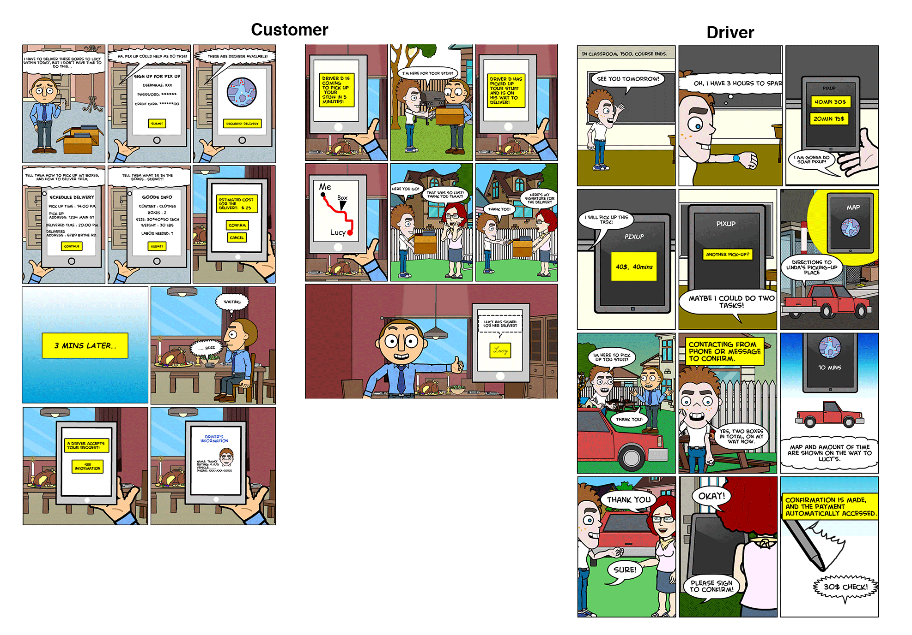

PixUp is a peer-to-peer delivery service that is currently under development. PixUp is a platform to connect vehicle owners (drivers) with residents/businesses that potentially need delivery service (users). Drivers pick up requests made by users and offer instant delivery from and/or to the users, who in turn offer monetary compensation to the drivers.
The client presented us with their idea: to develop an app that connects people with vihecles and people who need
delivery services. Without any other information to start with, how can we create an app that best fits the users' need?
Process
Interview and Persona
In order to develop Empathy with the users, the first step was to understand what their painpoints, motivations and worries would be to use this app.
A qualitative interview that deeply probes into the question is the best tool to offer insight into this topic. A total of six potential customers (three drivers and three users) were interviewed.
Storyboard
Storyboard was the second step in the proces. We wanted to get a better understanding of the context of how users could use the application and what the flow would be.
Storyboard became the best suited UX tool for this purpose. The storyboards visually describes the context, the problem, users' pain point, fear, and motivation.

Comparative Analysis
We wanted to have a thorough understanding of the market and the competitors that are already out there, in order to learn from them the possible features and
discover common themes among the competitors.
Wireframe
After thorough research and ideation, we brought out our designs to life with a wireframe/interaction flow of the application.
We were able to visualize our thoughts and map out all the important features in our design.
Usability Test
It's UX designer's job to provide the best user experience. Therefore it is important to test our app and see what the users
think about the interaction and experience. We developed a comprehensive testing script including tasks, pre-post questionnaires and conducted 5 usability tests.
Based on the findings, we adjusted details on the user interface and added various extra pages in the user interface as well.
Solution
After thorough investigation, ideation and implementation, our final solution yields two apps, one for customers and one for drivers.